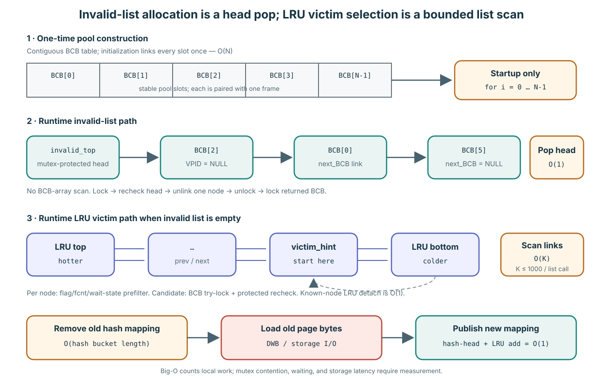
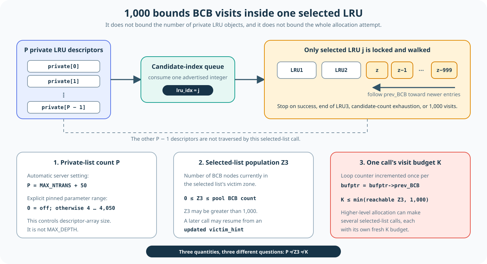
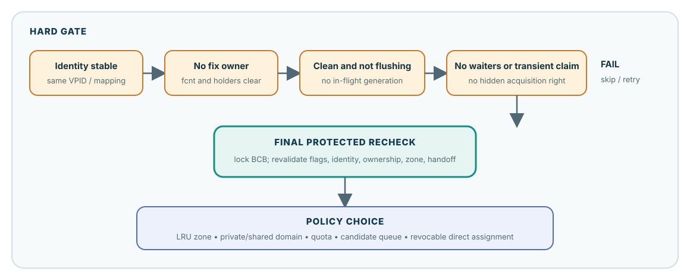

Page miss가 나면 incoming bytes를 담을 slot이 필요합니다
Page B를 요청했지만 resident가 아니라고 합시다. Page buffer에는 B를 담을 BCB/frame slot 하나가 필요합니다.
- 먼저 invalid list를 시도합니다. Invalid BCB에는 resident page identity가 없으므로 eviction도 필요 없습니다.
- Invalid slot이 없으면 LRU victim zone을 찾습니다. Slot을 재사용하려면 resident page 하나가 먼저 나가야 합니다.
- 안전한 victim만 선택합니다. Fixer가 쓰는 bytes를 빼앗거나, unflushed change를 버리거나, 진행 중인 handoff와 경쟁해서는 안 됩니다.
- Detach한 뒤 rebind합니다. 이전 mapping을 안전하게 제거하고 나면 같은 BCB/frame slot에 B를 load할 수 있습니다.
Replacement는 “가장 오래된 page를 찾기”가 아닙니다. “충분히 오래되었고 지금 재사용해도 안전한 page를 찾기”입니다.
Verified mechanism: pinned pgbuf_allocate_bcb()가 invalid-list first, LRU victim search second 순서를 설명하고 구현합니다.
“Invalid list를 시도한다”는 linked-list head 하나를 pop한다는 뜻입니다

Array는 storage를 소유하고 invalid/LRU link는 runtime에 그 stable BCB slot의 일부를 조직합니다.
Startup에서 BCB_table을 contiguous array로 할당합니다. Initialization이 각 slot의 next_BCB를 다음 slot에 연결하므로 최초 invalid list 구성은 한 번의 O(N)입니다. Runtime allocation path가 이 array loop를 반복하지는 않습니다.
Invalid list에는 invalid_top pointer 하나, count, mutex가 있습니다. Node는 next_BCB로 연결된 BCB입니다. Allocation은 lock 없는 empty hint를 본 뒤 lock하고 다시 확인하며, head를 그 next node로 옮기고 unlock한 다음 반환된 BCB를 lock해 void zone으로 바꿉니다. 이는 array scan이 아니라 node 하나만 다루는 O(1) list work입니다. 다만 contention이 있으면 invalid_mutex를 기다릴 수 있으므로 constant work가 constant wall-clock latency를 보장하지는 않습니다.
invalid_top = BCB[0], invalid_cnt = num_buffers로 설정합니다. 따라서 모든 BCB가 여기서 시작합니다. Runtime allocation은 entry를 pop하고, load 실패나 명시적 invalidation은 entry를 다시 push할 수 있습니다. Control object와 BCB node는 page-buffer finalization까지 pool이 소유합니다. Startup BCB/frame lifetime은 Lesson 0003, default 계산은 Lesson 0012B를 보세요. 그 baseline의 명시된 가정에서는 initialization 시 num_buffers = invalid_cnt = 32,768입니다.| Operation | 접근하는 구조 | Local work | Elapsed time을 지배할 수 있는 것 |
|---|---|---|---|
| 최초 free population 구성 | 한 번 연결하는 contiguous BCB array. | Page-buffer initialization에서 O(N). | 한 번의 allocation/initialization이며 miss-path cost가 아닙니다. |
| Invalid BCB 하나 획득 | invalid_top/next_BCB를 쓰는 singly linked head. | Traversal 없는 O(1). | Invalid-list mutex scheduling과 반환된 BCB lock. |
| 선택된 LRU 하나 search | Optional zone demotion 뒤 hint 또는 bottom부터 prev_BCB로 걷는 doubly linked list. | O(M + K), scan bound는 selected-list call마다 K ≤ 1000. | LRU mutex wait, demotion, cache miss, 실패 candidate 수, policy의 selected-list call 수. |
| Candidate 하나 recheck | BCB protection 아래의 BCB flag, atomic latch, waiter pointer. | O(1) field check. BCB try-lock은 기다리지 않고 실패 시 skip합니다. | 반복 skip이 바깥 scan을 길게 만들 수 있습니다. |
| 알고 있는 LRU node detach | Previous/next link와 zone/count metadata. | O(1). | LRU mutex를 가진 동안 수행합니다. |
| 이전 resident mapping 제거 | VPID hash bucket의 singly linked chain. | O(B), 여기서 bucket length는 B입니다. | Hash-anchor mutex wait와 collision. |
| 요청한 old page load | DWB lookup 또는 data-volume read로 frame을 채웁니다. | O(1) CPU work라고 표현하는 것이 유용하지 않습니다. | Storage/cache path와 decryption. 보통 pointer update보다 훨씬 클 수 있습니다. |
| Loaded BCB publish | Hash-chain head와 LRU insertion 하나. | 각 link insertion은 O(1). | Hash/LRU mutex contention. |
“1,000 links”는 이미 선택된 LRU 하나 안의 node 방문 수입니다

Private-list count P, 선택된 list의 LRU3 population Z3, 이 호출의 visit count K를 섞으면 안 됩니다.
pgbuf_get_victim_from_lru_list(thread_p, lru_idx)는 LRU index 하나를 받습니다. 그 list를 lock하고 victim_hint, 없으면 bottom에서 시작해 LRU3 안에서 bufptr->prev_BCB를 따라갑니다. Loop body에 한 번 들어가면 BCB 위치 하나를 방문한 것입니다. 해당 BCB를 검사하고, 필요하면 try-lock 후 recheck한 다음 반환하거나 link 하나를 이동합니다. 이 body가 한 호출에서 최대 1,000번 실행됩니다. LRU descriptor 1,000개를 검사한다는 뜻도, victim 1,000개를 만든다는 뜻도 아닙니다.
| 수량 | 무엇을 세는가 | 1,000이 상한인가? |
|---|---|---|
P | Pool-wide LRU array 안의 private LRU descriptor 수. | 아니요. 자동 server mode는 MAX_NTRANS + 50을 사용합니다. 명시 양수값은 이 baseline에서 4–4,050입니다. |
Z3 | 선택된 list의 LRU3에 들어 있는 BCB node 수. | 아니요. Pool population 범위에서 1,000을 넘을 수 있습니다. |
K | 이 selected-list 호출이 방문한 BCB 위치 수. | 예. K ≤ min(reachable Z3, 1000)이고, 성공이나 다른 종료 조건이 있으면 더 작습니다. |
Higher-level policy는 caller의 private LRU, advertise된 다른 private list, advertise된 shared list, 마지막 own-list fallback에 대해 selected-list 호출을 여러 번 할 수 있습니다. 호출마다 새로운 1,000-node budget을 가집니다. 선택한 private list가 over quota이면 scan 전에 boundary node M개를 demote할 수도 있는데, 이 작업은 MAX_DEPTH 밖입니다. 따라서 helper 전체는 O(M + K), linked-list scan 자체는 bounded O(K)입니다.
num_LRU_chains를 1,000으로 제한하고 자동 shared list 하나당 buffer 약 1,000개를 목표로 합니다. 어느 쪽도 private LRU 개수의 상한이 아닙니다.PSTAT_PB_ALLOC_BCB, PSTAT_PB_ALLOC_BCB_SEARCH_VICTIM, list-search timer, condition-wait time을 기록합니다. Target workload에서는 이 counter나 focused benchmark를 사용해야 하며 Big-O를 latency claim으로 바꾸면 안 됩니다.Verified mechanism: BCB array construction과 initial link는 page_buffer.c:5559–5660, invalid-list structure와 head initialization은 626–634와 5907–5919, constant-time pop/push는 8905–8983, bounded LRU scan과 pre-scan adjustment는 9327–9537과 9984–10048, private count는 13941–13985에 있습니다.
비활성 ghost history가 필요할 때만 AOUT 전용 lesson으로 이동하세요
Pinned startup path는 AOUT을 강제로 끄므로 여기서 배우는 active safety path에 포함되지 않습니다. Lesson 0012A가 ghost-entry structure, dormant admission branch, historical disablement, revival boundary를 담당합니다.
Slot은 그대로 있고 page identity가 바뀝니다
BCB는 frame 하나와 짝을 이루는 reusable descriptor입니다. Pool 안에서 두 address는 안정적입니다. 현재 resident page는 bcb->vpid가 이름 붙이며, 이 identity는 통제된 detach/load sequence를 거쳐 바뀝니다.
| 시점 | 동일한 pool slot | 나타내는 것 |
|---|---|---|
| Replacement 전 | BCB[42] + frame[42] | Resident page A. |
| 안전한 detach 뒤 | BCB[42] + frame[42] | Resident page 없음. 통제된 재사용 가능. |
| Miss load 뒤 | BCB[42] + frame[42] | Resident page B. |
재사용 전에 쉬운 질문 네 개를 합니다

LRU position은 candidate를 제안할 뿐이며 safety gate를 무시하게 해 주지 않습니다.
| 질문 | Unsafe example | 재사용이 기다려야 하는 이유 |
|---|---|---|
| 누군가 사용 중인가? | fcnt > 0 | Successful fixer가 여전히 frame을 소유하며 borrowed pointer를 사용할 수 있습니다. |
| 변경한 bytes의 debt가 남았는가? | DIRTY 또는 FLUSHING | Dirty bytes가 아직 propagate되어야 하거나 copied generation의 completion work가 남았습니다. |
| 다른 operation이 기다리거나 claim 중인가? | next_wait_thrd != NULL 또는 avoid-victim flag | Waiter, invalidation, direct-victim handoff가 아직 이 BCB를 참조합니다. |
| 이 사실들이 지금도 참인가? | 이전 scan은 BCB protection 없이 이루어졌습니다. | 처음 관찰한 뒤 fixer나 flusher가 candidate를 바꿨을 수 있습니다. |
fcnt == 0은 “현재 count된 fixer가 없다”만 뜻합니다. Clean, not flushing, no waiters, safely detached까지 한꺼번에 뜻하지 않습니다.싸게 scan한 뒤 destructive decision은 lock 아래에서 내립니다
- LRU mutex가 list를 안정시킨 동안 scanner가 가능성 있는 candidate를 찾습니다.
PGBUF_BCB_TRYLOCK()이 그 BCB를 보호하려고 시도합니다. LRU mutex를 가진 채 기다리지 않으며, 실패하면 candidate를 건너뜁니다.- BCB protection 아래에서
pgbuf_is_bcb_victimizable(..., true)가 현재 ownership, waiter, avoid-victim state를 다시 확인합니다. - 통과한 candidate만 LRU에서 제거합니다. Victimization/rebind가 exclusive handoff를 갖도록 BCB lock을 유지한 채 반환합니다.
왜 두 번 확인할까요? 첫 read는 hint입니다. 그 read와 BCB lock 사이에 다른 thread가 page를 fix하거나 flush를 시작할 수 있습니다. Protected read가 실제 decision입니다. 사실이 바뀌었으면 건너뛰고 계속 찾습니다.
Verified mechanism: victim predicate는 page_buffer.c:9265–9325, scan, try-lock, protected recheck, detach, locked return은 9399–9478에 있습니다.
Allocator는 재사용 가능한 BCB가 생길 때까지 기다립니다
모든 candidate가 fixed, dirty, flushing, waiting 또는 다른 handoff 상태라면 victim search는 아무것도 반환하지 않습니다. Flush는 dirty candidate를 clean하게 만들 수 있고 unfix는 ownership을 끝낼 수 있습니다. Server mode에서 allocating thread는 direct-assigned victim을 기다릴 수 있고, 소비 전에 그 candidate가 다시 fixed되면 재시도합니다.
LRU policy는 안전한 candidate 중 무엇을 선호하고 어떻게 progress를 만들지 결정합니다. Revision마다 바뀔 수 있습니다. Safety rule은 바뀌지 않습니다. Successful fixer나 incomplete flush generation이 slot rebind 뒤까지 살아남아서는 안 됩니다.
| Mechanism | 담당하는 일 |
|---|---|
| Safety gate | “이 slot을 지금 재사용해도 되는가?”에 답합니다. |
| LRU zone, private/shared list, quota, hint | 더 선호할 만한 candidate의 순서를 정하거나 위치를 찾습니다. |
| Flush와 direct-victim progress | 첫 search에서 아무것도 못 찾았을 때 eligible slot이 생기도록 돕습니다. |
Implementation policy: wait/retry는 pinned page_buffer.c:8236–8403에 있습니다. 자세한 LRU lifetime, quota, direct-victim behavior는 이 첫 mental model이 아니라 아래 Core와 Advanced 문서가 담당합니다.
Unfix, flush, victimize는 서로 다른 debt를 끝냅니다
| Operation | 끝나는 것 | 남을 수 있는 것 |
|---|---|---|
| Unfix | Caller 한 명의 fix debt. | Page는 resident이면서 dirty일 수 있습니다. |
| Flush | Copied generation 하나의 propagation debt. | Page는 resident일 수 있고 newer generation이 dirty일 수 있습니다. |
| Victimize | 모든 safety condition을 통과한 뒤의 old resident mapping. | Logical page는 storage에 계속 존재합니다. |
가능한 candidate 하나를 고릅니다
문제
Page B가 miss했고 invalid list는 비었습니다. LRU scan에서 A는 fcnt = 1, C는 DIRTY, D는 fcnt = 0이며 dirty/flushing flag와 관찰된 waiter가 없습니다.
어떤 page를 즉시 제외해야 할까요? D는 이미 victim일까요, 아니면 아직 candidate일 뿐일까요? D의 slot이 B를 나타내기 전에 필요한 마지막 protected step을 설명하세요.
Candidate 하나를 scan부터 detach까지 추적합니다
Pinned page_buffer.c:9399–9478을 읽고 cheap prefilter, BCB try-lock, protected victimizable check, LRU removal 네 지점을 표시하세요.
Canonical replacement chapter 열기 → · Advanced progress detail 열기 →